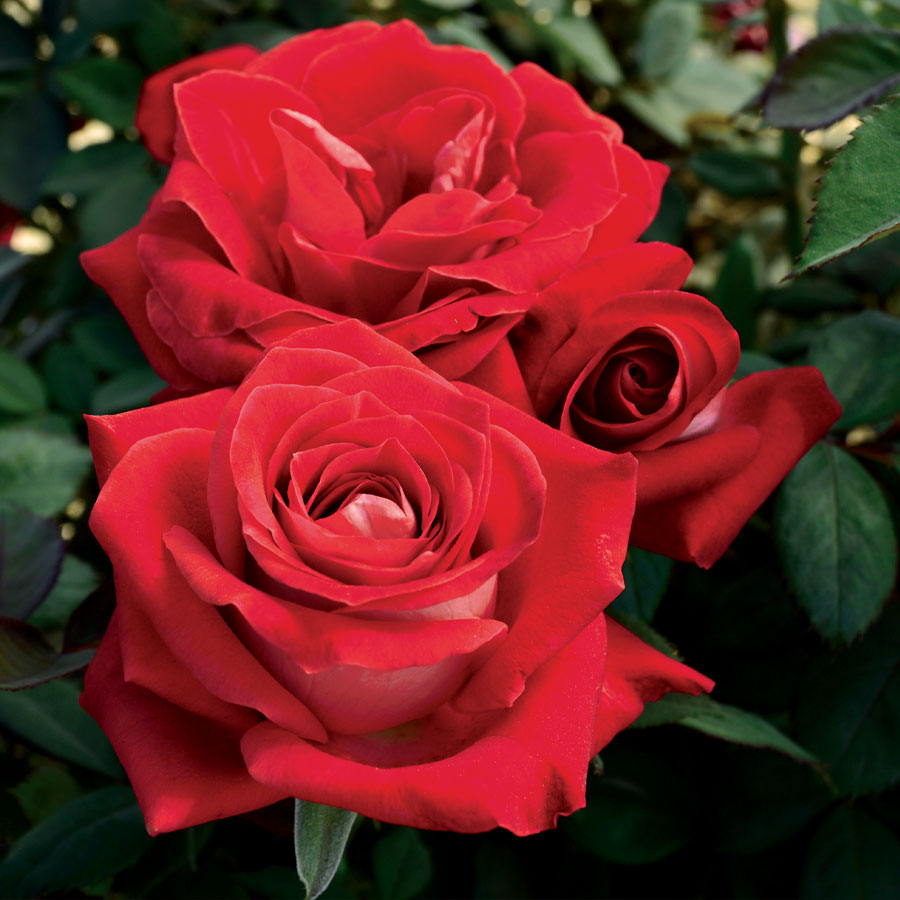

Quercus faginea
Carvalho Português
O carvalho-português tem folhas marcescentes. Assim como os demais carvalhos, produz a bolota ou landra como fruto, que é usada como alimento por vários animais, como o javali, os esquilos, que muitas vezes as enterram e se esquecem, acabando por ser plantadores naturais da espécie.